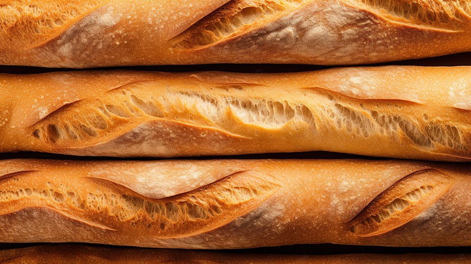

présentation
Nos horaires
- De 7h30 à 19h Du lundi au jeudi
- De 14h30 à 19h Le vendredi
- De 9h à 18h30 Le week end
Nos engagements
- un pain qui croustille
- un pain français
- vive le capitalisme
Fondé en 2025 par Mister Bean, notre boulangerie a pour objectif de vous faire manger du pain en compagnie de votre peluche, idée de M.Bean
Depuis sa création notre bonlangerie fait constament de nouvelles innovation, comme le pain à réchauffé au micro-onde. Cependant pour faire tant d'avancer nous avons besoins de vous, alors donnez nous votre argent
